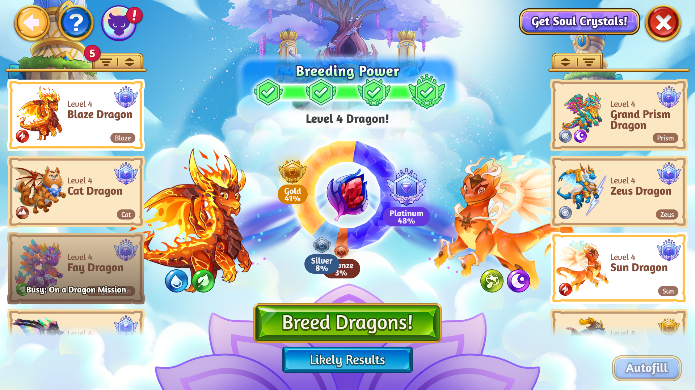

Mobile controls preferred · Try full screen for more room to play.
A cozy 3D summer camp sandbox built around a simple idea: everyone can join in, spectate, or just hang out.
I designed Chonkimals as a shared, real-time social world at Camp Chonkton. Roam the campgrounds, ride the cliffside zipline, take a hang glider from the summit, or find your next game with fellow campers.
Explore what’s in camp
Party games: Sumo, Dodgeball, and River Log Race.
Cooperative play: Lunch Delivery, a PvE event.
Tabletop classics: Words With Friends and Dice With Friends.
Make camp your own: mock Camp Pass progression, Camp Care Package gacha, a cabin dressing room, and tent customization.
Zynga Hackathon 2026 · Concept to submission in 3 days.
Dice Challenge replaces traditional tiles with letter dice, bringing rolling, re-rolling, and push-your-luck decisions into a fast-paced competitive mode for Words With Friends.
New-mode onboarding · Visual identity · Competitive play
Game
Words With Friends
Dice Challenge gameplay preview.
01 / THE OPPORTUNITY
A change of pace alongside Classic.
Classic matches offer slower, more deliberate wordplay. Dice Challenge introduced a quicker, more unpredictable alternative: a competitive experience built around taking chances and making the most of each roll.
The project notes describe it as Words With Friends’ first permanent player-versus-player mode since Classic. The aim was to bring a fresh competitive rhythm into the existing ecosystem.
02 / THE CHALLENGE
Make a new mechanic feel easy to pick up.
The design challenge was to introduce visually engaging mechanics that players could understand quickly, while integrating the mode into the wider Words With Friends experience.
Help first-time players understand the new way to play.
Create a distinct visual identity that still feels part of Words With Friends.
Support social sharing as part of the experience.
03 / THE PLAY EXPERIENCE
Roll, reconsider, then make a word.
Players roll letter dice and can re-roll to push their luck. Each turn asks them to weigh the letters they have against the possibility of a better combination.
Roll the letter dice.
Choose whether to re-roll.
Place a word on the specialized board.
Use multipliers and full-row bonuses to build a stronger score.
This creates a different kind of decision from choosing traditional tiles: word knowledge works alongside uncertainty, with the board adding another layer of opportunity.
04 / DESIGN FOCUS
Balance freshness with familiarity.
I take UI/UX from concept and player flows through design in Figma and implementation in Unity, then hand off the finished prefabs to engineers for integration. The mode’s design goals connected three needs: explaining a new mechanic, expressing a livelier pace, and keeping the experience recognizable within Words With Friends.
The central design tension was giving the mode its own personality while making the first experience approachable for existing players.
05 / TAKEAWAY
Give familiar skills a different kind of decision.
Dice Challenge keeps word-building at its core while changing the tempo and the choices around it. Rolling and re-rolling create a new source of tension; board bonuses give players another reason to consider where a word belongs.
Letter Lock brings a bite-sized daily challenge to Words With Friends. Tactile letter locking, a growing difficulty curve, and shareable results turn familiar wordplay into a fresh puzzle ritual.
Onboarding · Interaction feedback · Daily play · Sharing
Game
Words With Friends
I take UI/UX from concept and player flows through design in Figma and implementation in Unity, then hand off the finished prefabs to engineers for integration.
Letter Lock gameplay preview.
01 / THE CHALLENGE
Make a new puzzle feel immediately inviting.
The goal was a short, puzzle-forward experience players could pick up daily and share. It needed a clear first-time experience, a difficulty curve that sustained interest, and a visual identity that felt fresh while belonging to Words With Friends.
The design challenge was to make the new mechanic visually engaging and enjoyable without making it difficult to understand.
02 / ONBOARDING
Build understanding through the first puzzle.
The early flow explored a dedicated tutorial level, guided instructions, and moments of free play. It mapped the player’s path through word entry, feedback, unlocking columns, and completing the tutorial before reaching the daily puzzle.
Early flow iteration: guided onboarding and a dedicated tutorial puzzle. View full size ↗
03 / INTERACTION & FEEDBACK
Make each decision feel tangible.
Locking letters adds tension and strategy. Clear feedback helps players distinguish valid words, invalid or repeated attempts, and progress toward completing the puzzle.
Bold color, sound, animation, and an animated background supported a polished experience. The project notes identify this as the first animated background in Words With Friends.
Unlocking a column.Recognizing a valid word.Invalid and already-played word feedback.Celebrating puzzle completion.
04 / DAILY PROGRESSION
Start approachable. Build the challenge.
Early puzzles were designed to be friendly. As the week progresses, the difficulty increases, asking players to think harder and be more creative. The aim was to make later wins feel more satisfying while preserving an accessible way into the mode.
05 / SHARING
Let a completed puzzle start a conversation.
A clean, celebratory results screen connected to a built-in share flow. Players could send or post their results, making the daily challenge visible beyond the game.
The product goals were organic discovery, re-engagement through daily accomplishment, and lightweight competition between friends.
A compact result players can compare with friends.
06 / TAKEAWAY
Connect clarity, delight, and a reason to return.
Letter Lock’s design connects understandable first steps with tactile feedback, a growing challenge, and shareable accomplishment. Each supports the same goal: a small puzzle experience players can make part of their day.
Dragon Breeding connects Soul Crystals, elemental breeding, and Dragon Ranks in a new progression loop. Players combine a Soul Crystal with two dragons to create a new dragon—and a new reason to return to camp.
Player flows · Breeding decisions · Collection progression

Interface work for the Dragon Breeding experience.
01 / THE CHALLENGE
Make dragons matter beyond the collection.
The project aimed to give dragons more purpose, reinforce elemental breeding types, and introduce Dragon Ranks. Two Soul Crystal chains and a breeding system created a new way to grow a collection.
The UX challenge was to make this system fit naturally into existing camp play, while helping players understand their choices and what they could receive.
02 / MY CONTRIBUTION
From player flows to in-game interfaces.
I take UI/UX from concept and player flows through design in Figma and implementation in Unity, then hand off the finished prefabs to engineers for integration. My work included breeding interfaces, likely-results screens, and upsell moments. I also recreated and improved the Beacon upgrade screens and designed Gogapedia, a collection-screen proof of concept that helped inform the later Discovery Book project.
03 / A KEY DESIGN DECISION
Meet players where they already play.
I designed multiple entry points into Dragon Breeding so players could reach the feature through familiar camp actions.
A shortcut with context built in
A player can drag a specific Soul Crystal onto the Beacon in camp. The breeding scene opens with that crystal already selected.
Choose a Soul Crystal in camp
Drag it onto the Beacon
Enter breeding with the crystal selected
This carries the player’s intent into the next screen instead of asking them to repeat a choice. The goal was to integrate breeding into the core gameplay loop and support repeat visits through an entry point that matched how players already interacted with camp.
Dragon Breeding user flow: camp entry points, breeding states, and return paths. View full size ↗
04 / SUPPORTING THE DECISION
Help players understand what comes next.
Likely-results screens supported the choice of breeding inputs. Alongside the breeding interfaces, I designed upsell moments and improved Beacon upgrade screens to support the surrounding progression experience.
Gogapedia explored a collection view beyond the immediate breeding action. That proof of concept helped inform the later Discovery Book project, connecting this feature work to a broader collection experience.
Completion, reveal, and upsell interface exploration. View full size ↗
05 / COLLECTION EXPLORATION
Gogapedia: a view of breeding discoveries.
The collection-screen proof of concept brought breeding discoveries into one view, with discovered dragons, silhouettes for undiscovered breeds, and a reveal state for new additions. This exploration helped inform the later Discovery Book project.
Gogapedia collection-screen proof of concept. View full size ↗MEET GOGA
A little character, a lot of personality.
Goga’s animated performance brings personality to the breeding experience.
06 / FEEDBACK & DELIGHT
Make the reveal feel like a moment.
The breeding-complete reveal builds anticipation around the new dragon. The transition animation connects the surrounding screens with a cloud-and-sparkle effect.
Breeding completion and dragon reveal animation.Cloud-and-sparkle screen transition.
07 / OUTCOME & TAKEAWAY
A new loop for collection progression.
The project retrospective reported improvements in game performance, particularly player retention.
The central design principle: a new feature becomes easier to adopt when it connects to familiar actions and preserves the player’s intent across screens.
A clearer path from first steps to a first Camp Wonder.
New-user onboarding and Starter Quests were designed together to teach key mechanics, clarify early progression, and give players a rewarding path from the tutorial into core gameplay.
Early-game clarity · Quest progression · Player guidance
Game
Merge Dragons!
Interface designs for A Better Beginning.
01 / THE CHALLENGE
Turn early actions into a meaningful journey.
The early-game experience needed to introduce mechanics while helping players understand what they were working toward. Starter Quests created a structured path to a first Camp Wonder, while onboarding improvements refined the surrounding experience.
02 / MY CONTRIBUTION
Design the guidance and the experience around it.
I take UI/UX from concept and player flows through design in Figma and implementation in Unity, then hand off the finished prefabs to engineers for integration. My work spanned the updated HUD, a new quest modal, the “Find in Camp” feature, Wonder teasers, and enhanced visual effects.
The onboarding work also included revised Fog art, widgets, dialogue, user flows, and improvements to premium land and offers.
Starter Quests introduced mechanics through a sequence of tasks, helping players move from tutorial instruction into regular camp play. A first Camp Wonder gave that sequence a longer-term destination.
The HUD and quest modal communicated the next task. “Find in Camp” connected a quest to its location, while Wonder teasers and visual effects helped communicate the progression players were building toward.
Make the surrounding screens support the same journey.
Quest guidance was developed alongside improvements to the broader onboarding experience. Updated Fog art, widgets, and dialogue supported the early-game flow, with premium land and offers considered as part of that same player journey.
05 / OUTCOME & TAKEAWAY
Support momentum beyond the tutorial.
The project retrospective reports improvements in onboarding, progression clarity, and retention.
The design principle behind the work: pair a clear next action with a meaningful longer-term goal, so players can understand both what to do and why it matters.
Discovery Book brought Dragon Book and New Discoveries together, connecting collection management, merging, and discovery rewards in a unified experience.
A collection experience split across separate places.
Before the update, collection management and discovery were fragmented. Players encountered friction when viewing dragons, tracking discoveries, accessing New Discoveries, and navigating between features. The existing UI also needed a refreshed design language.
02 / THE GOALS
Bring related player tasks together.
The goals were to centralize collection management, improve merging and progression, modernize the interface, and introduce rewards that encouraged continued discovery.
03 / THE DESIGN DECISION
Unify Dragon Book and New Discoveries.
I take UI/UX from concept and player flows through design in Figma and implementation in Unity, then hand off the finished prefabs to engineers for integration.
I brought the two features together in one interface so players could view and manage their dragon collection, merge dragons, and track discoveries within a cohesive system.
Bringing these tasks together supported a more connected experience: discovering something new and managing what players already owned became parts of the same destination.
Collection rewards added an incentive to keep progressing. The unified book connected these rewards to the collection experience, helping discovery become an ongoing part of play.
Discovery Book connected previously separate features around a shared purpose: understanding and growing a collection. Its value lies in bringing related actions together with clearer navigation and a refreshed interface.